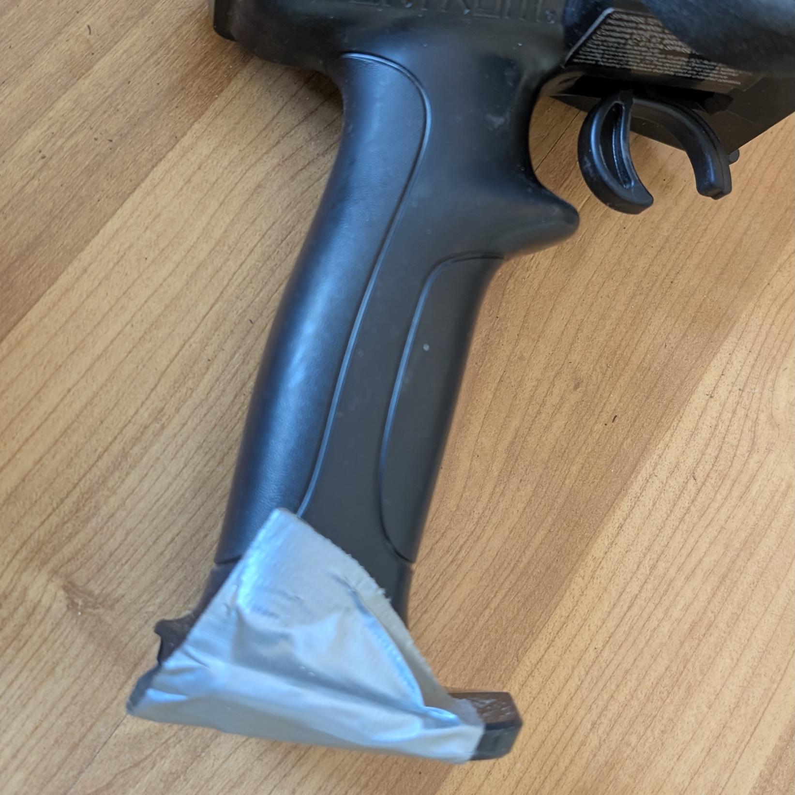
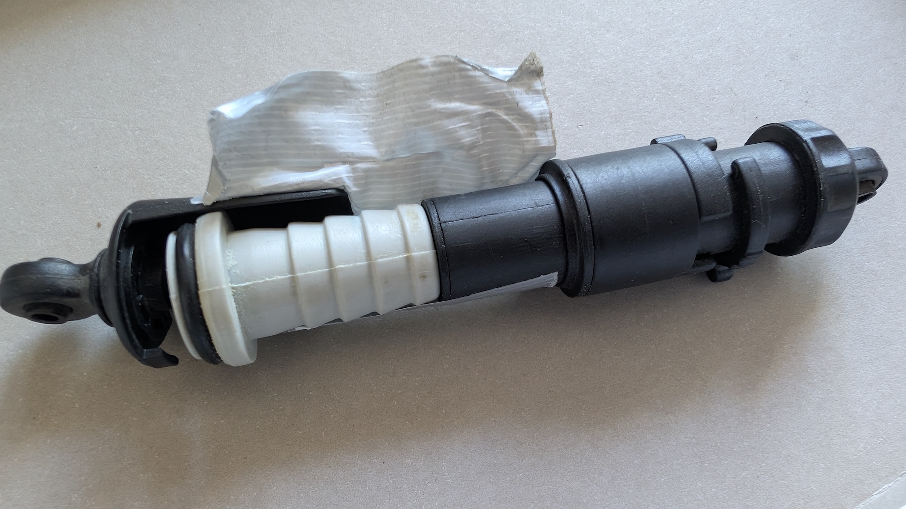
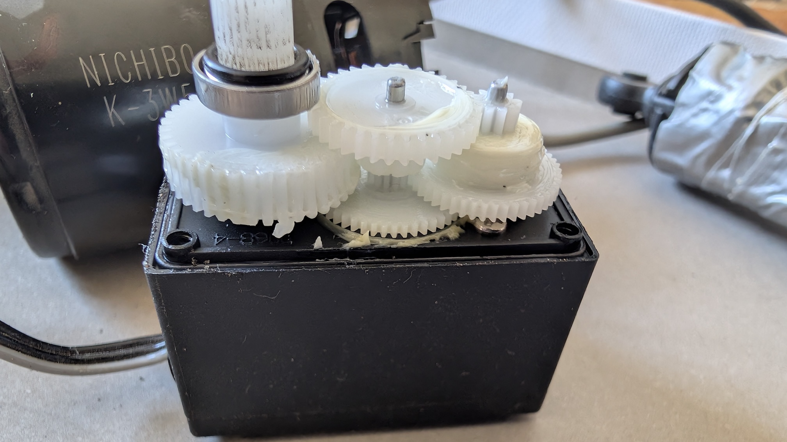
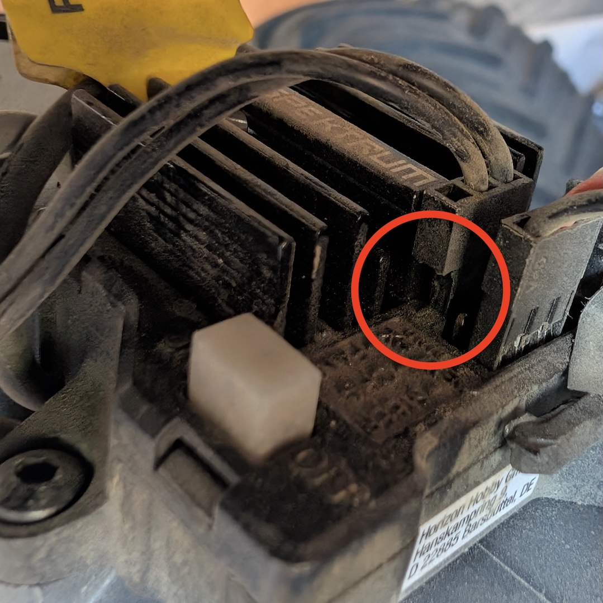
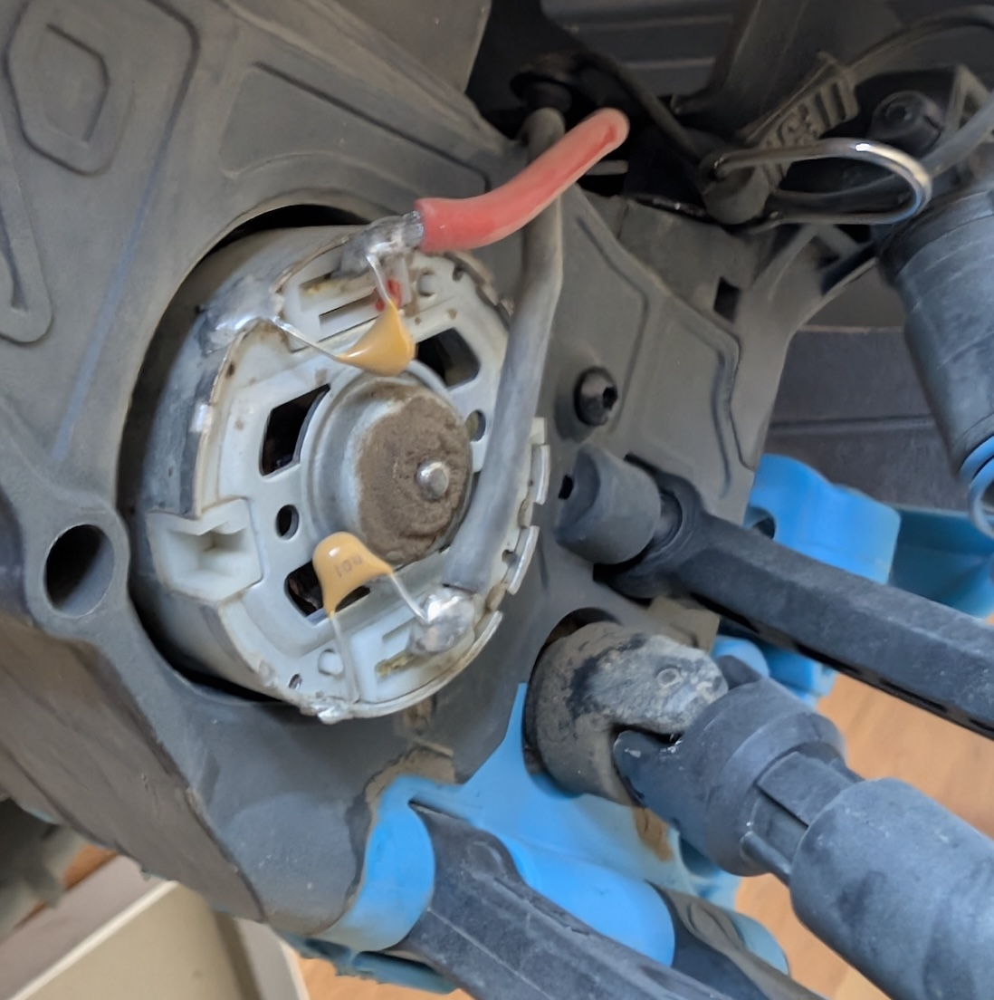
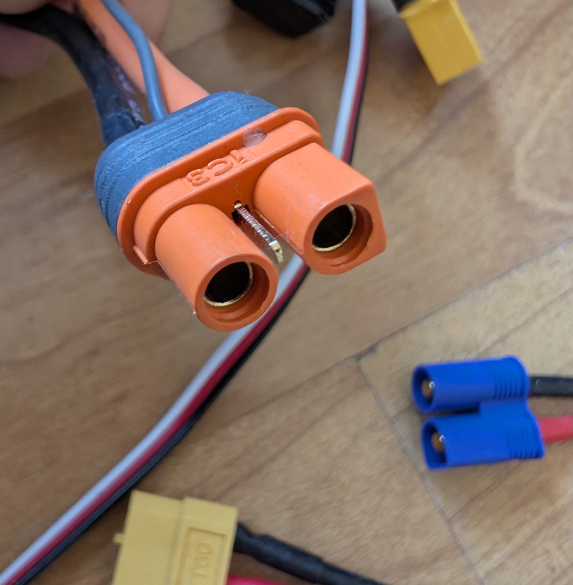
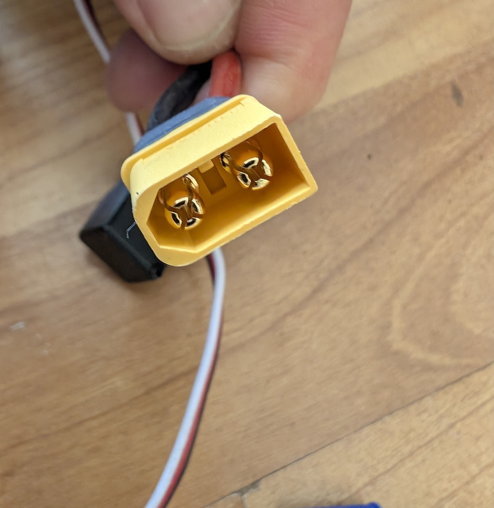
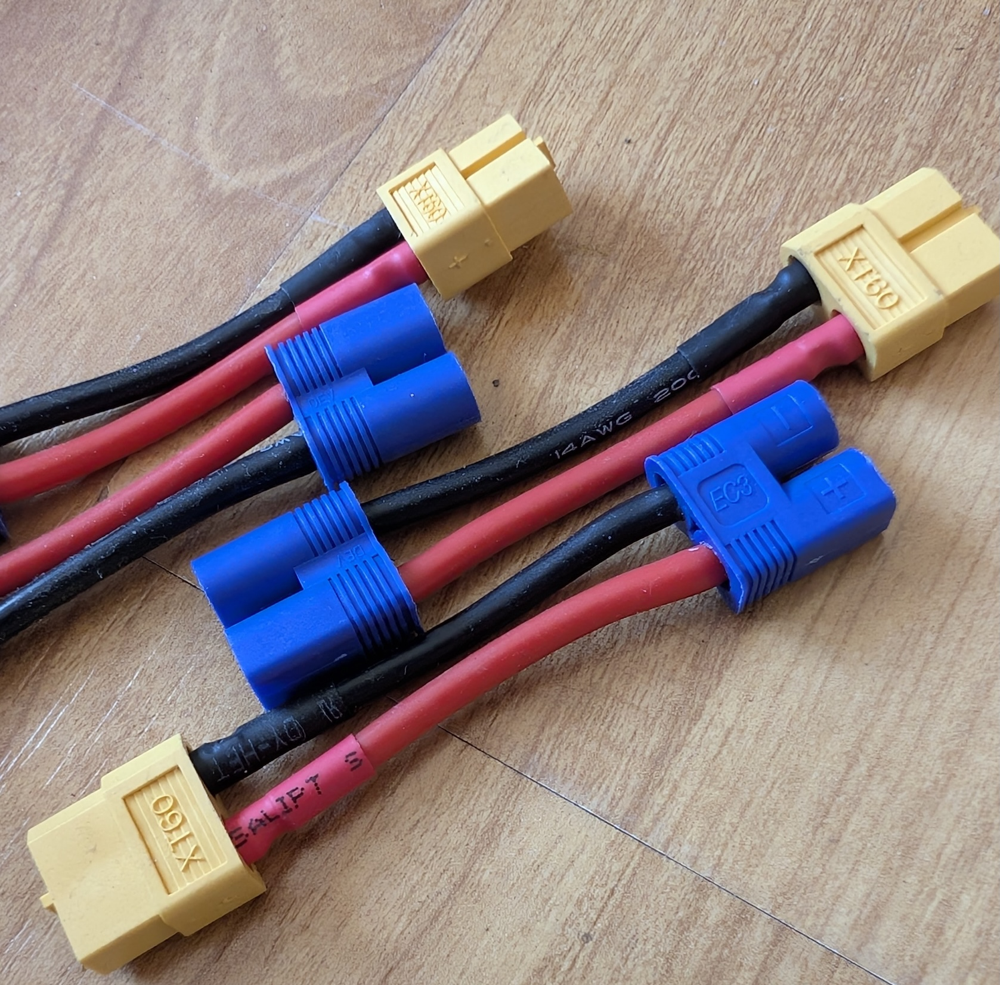
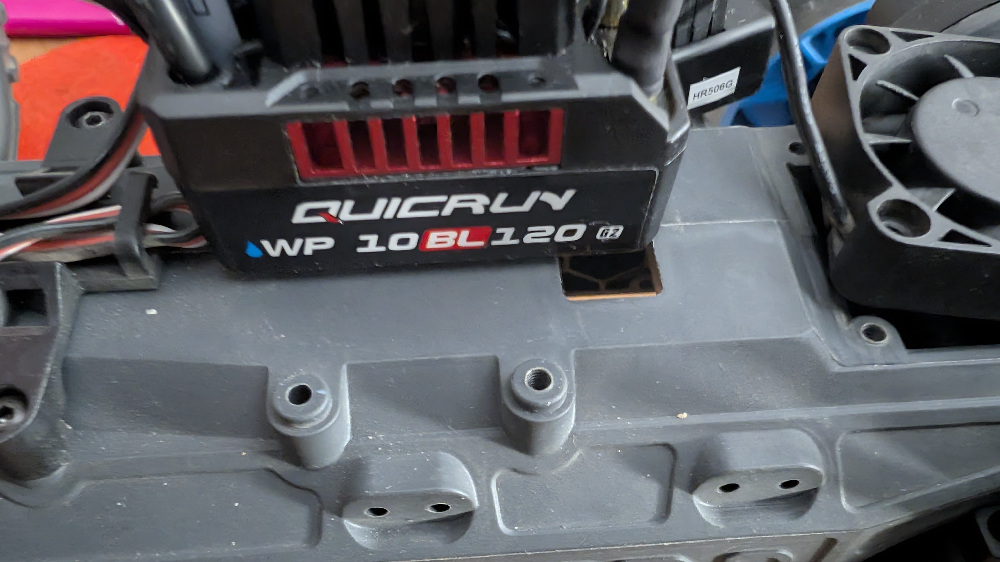

Table of Contents
And now to something completely different…
A few weeks ago I dived into a new “hobby”: remote-controlled semi‑pro vehicles — a birthday present for my child.
So I started researching. For me, the priorities were robustness and modularity. I wanted my kid to be able to drive through rough terrain and I knew that parts would occasionally break. That meant spare‑part availability had to be good.
At some point I found the Arrma Gorgon, a 1/10 monster truck. Retail price without battery or charger: €180. Not cheap, but reasonable. Since driving together is twice the fun, I bought two vehicles. I also ordered four LiPo batteries. (This is where the whole compatibility madness begins: LiPos need a dedicated charger.) Because the stock model uses brushed motors, I also bought two fans so I wouldn’t be forced to stop after 20 minutes of driving. And the fans came without screws, so I added a 500‑piece RC screw kit to the cart. It adds up — but there’s more.

More issues followed. For example, the fan connector didn’t fit the controller, so out came the side cutters and I trimmed the protruding plastic. Great start for “modularity.”

Here’s my initial shopping list:
| Qty | Item | Price |
|---|---|---|
| 2 | 1/10 GORGON 4X2 MEGA 550 Brushed Monster Truck RTR (ARA3230T1) | 160.20 EUR each |
| 2 | High‑speed fan 40mm plastic 5V–8.4V, JST plug, 16,000 RPM (HSPX033) | 11.90 EUR |
| 4 | 5000mAh 2S 7.4V Smart G2 LiPo battery 30C hardcase – IC3 (SPMX52S30H3) | 122.27 EUR + 40.76 EUR |
| 2 | Smart S100 G2 USB‑C charger (SPMXC2090) | 27.10 + 27.10 EUR |
| 1 | 500‑piece RC screw kit | 13.99 EUR |
| 1 | Shipping | 4.90 EUR |
The first day was a blast — the electric motors have plenty of power and we had an enormous amount of fun. But already on day one the first disappointment: a front suspension rod broke.
I temporarily repaired the shock using a suitable piece of hose coupling until the replacement shock set arrived — fixed professionally with gaffer tape, naturally.

Costs for that repair:
| Qty | Item | Price |
|---|---|---|
| 1 | Shock set 11mm bore, 116mm length, 500 cSt oil (ARA330756) | 23.30 EUR |
| 1 | Shipping | 3.90 EUR |
The next day brought the next surprise: within a few hours the steering failed. At first it’s confusing since it’s not immediately clear what’s broken. Eventually you find the steering servo — and it failed on day two, on both vehicles.


From my perspective the issue is clear: the shock protects the body but not the tires. The tires are simple, tubeless, very soft rubber. Every collision transfers force directly to the control arms, the steering and the suspension. The servos use cheap plastic gears that don’t last. That’s a design flaw — or am I the only one noticing?

So I grabbed the craft scissors, cut a piece of HD‑PE pipe and screwed it to the small shock.

I ordered a new pair of servos.
Costs for the servos:
| Qty | Item | Price |
|---|---|---|
| 1 | Miuzei digital servo 25kg 270° pair for mini RC cars (1/8, 1/10, 1/12) | 24.98 EUR |
The installation is quite fiddly because the control arms sit under a plastic brace. Eventually it was fixed and we went out again…
But then the next problem surfaced:
Less than a week later the drive motors failed. Troubleshooting was tricky because it’s not obvious whether the battery, controller or motor itself is at fault.
Eventually it became clear: both motors were defective, despite the added cooling. I contacted support, which I probably should have done earlier. The dilemma: I wanted to keep the vehicles because my kid had already grown attached to them.

Support was friendly and quickly offered replacements for both motors. Not wanting a fight, I ignored the broken shocks and servos and accepted the replacement motors — I just wanted to drive.

When the replacements arrived I installed them and everything initially seemed fine. After a few minutes of driving smoke rose from one truck. This time it was user error: in my excitement I forgot to reconnect the motor/controller insulating sleeve — short circuit.
And a short circuit takes several components with it because there appears to be no fuse.
Okay, I told myself, I wanted to upgrade to brushless motors anyway. So the research machine started again. One tip: don’t blindly trust Gemini or ChatGPT — they often recommend things that simply don’t fit. Compatibility matters and the AI often misses that.
I found what looked like a perfect brushless combo, but a motor doesn’t come alone: you need a matching ESC and typically a separate receiver. The stock controller/receiver is mounted with screws — the new receiver had no mounting points.

Anyway, the new drive combo arrived and I tested it on the bench: controller + motor + battery.
The battery? It had an IC3 connector — plus and minus plus a small pin for the charger to query capacity/status. The ESC had an EC3 connector. They don’t match.
So out came the adapters.
| Qty | Item | Price |
|---|---|---|
| 1 | EC3 male to XT60 adapter with 5cm 14AWG wire for RC LiPo | 8.99 EUR |
Adapter arrived. Adapter connected. ESC connected. Battery connected. Motor: runs.
  
So far, so good — until I tried to mount the motor. The stock motor routes its wires out the back; the new motor has a side exit and is shorter. In short: it doesn’t fit. Frustration ensued.
Costs for the brushless combo that I ended up returning:
| Qty | Item | Price |
|---|---|---|
| 1 | Quicrun brushless combo WP10BL120G2 with 3652SL‑3250KV‑G2 for 1:10 | 84.95 EUR |
| 1 | SLR300 3‑channel SLT receiver (single protocol) | 27.48 EUR |
| 2 | Shipping | 5.99 EUR |
I emailed the seller and returned the motor (shipping at my cost). Research continued: the motor needed to be longer or have rear‑exit wires. I found another candidate:
| Qty | Item | Price |
|---|---|---|
| 1 | Quicrun brushless combo WP10BL120G2 with 3660SL‑3150KV‑G2 (HW38030210) | 82.75 EUR |
| 1 | Shipping | 5.90 EUR |
Ordered, waited, received — with a tiny spark of hope.

The longer motor fit the case exactly — great — but then the pinion issue appeared: the longer motor’s shaft is thicker (5 mm) while the stock pinion has a 3.175 mm bore.
More searching led me to a suitable pinion on Amazon. Two days later it arrived and looked perfect for the 5 mm shaft.
| Qty | Item | Price |
|---|---|---|
| 1 | 13T Mod1 Safe‑D5 pinion | 9.99 EUR |
But it didn’t fit. The teeth barely meshed with the gearbox gear and the diameter was too large, causing excessive friction. The plastic gearbox gear wouldn’t take the load for long.
Rage. Despair. Doubt. The hunt continued: the right pinion should have no more than 12 teeth, module 0.8, and a Safe‑D (D‑shaped) bore to prevent slipping. I skipped the Safe‑D requirement and hoped a plain 5 mm bore pinion with 12 teeth and 0.8 module would work:
| Qty | Item | Price |
|---|---|---|
| 1 | 5‑piece hardened steel pinion set, 5 mm bore — 11T,12T,13T,14T,15T | 15.99 EUR |
That pinion worked. The drivetrain was back together, but this is a jury‑rigged long‑term provisional solution. The grub screw that came with the pinion was too long (WTF), so you must be careful not to push the pinion on too far. The IC3→EC3 adapter also eats space in the battery bay, making battery swaps fiddly. Finally, you need to secure receiver, ESC and switch somewhere in the chassis — there are mounting holes, but you need a kind of cage. For now I used Velcro and double‑sided tape. The result is a chaotic setup far from the modularity I hoped for.




Conclusion
First — self‑criticism: the short circuit was my fault. That was spectacularly stupid.
༼ʘ̚ ʖ ʘ̚༽
That said, once you know what to look for the technical specs aren’t that hard to understand. You just have to know where to look. A quick note: I initially tried to use Gemini, ChatGPT and Perplexity to find the right parts. The AIs repeatedly recommended unsuitable parts because they didn’t take compatibility details into account.
Even specific follow‑up questions often led to wrong links or bad recommendations, so I paid a lot of tuition. My tip: talk to the vendor directly if possible — don’t rely exclusively on AI for specific hardware compatibility.
At least one thing came out of it: tinkering is fun. For anyone interested in swapping the motor on an Arrma Gorgon, here are the essentials — and many points apply to other vehicles too:
- There are many battery types. LiPo is the de facto standard; each battery class needs a compatible charger. Check whether the battery has a telemetry pin on the connector.
- The motor must be long enough if the wires exit the side — aim for at least 60 mm length; too long is also a problem. Short motors typically route wires out the rear.
- You usually need a new ESC and possibly a separate receiver. Some combos include everything, some don’t.
- Pay attention to connector types: EC3, IC3, XT60, male/female — they matter.
- The stock pinion has a 3.175 mm bore — check the motor shaft diameter and the pinion module (tooth size).
- The original shaft often has a D‑shape (Safe‑D) to prevent slipping; a simple round shaft requires a suitable pinion and grub screw.
- The number of teeth and the module must match the gearbox gear; changing pinions changes the drive ratio.
- If you add a fan you may need longer screws.
- Make sure the new motor can be secured to the chassis — some mounts require custom brackets or Velcro.
Final note on quality and design: the stock brushed motor is exposed near the drive shaft and is vulnerable to dust ingress via the ventilation slots. That is not ideal for long‑term off‑road use. A closed brushless motor is a sensible upgrade if you plan to run the truck in rough conditions.
The decision to use the long front bumper is debatable — while it protects the chassis it also transfers impact forces to the control arms and servos, increasing the risk of servo failures. The long control arms act as levers that strain the servo’s plastic gears.
In my view the Arrma Gorgon in stock trim is not designed for hard off‑road use — despite what the promo videos suggest.
https://www.arrma-rc.com/de/product/1-10-gorgon-2wd-rtr-brushed-monster-truck-blue/ARA3230T1.html
But maybe Arrma has an explanation?
Summary
Hands-on report on the Arrma Gorgon 1/10: purchases, mods, repairs and a cost breakdown with practical tips.
Main Topics: RC vehicles Arrma Gorgon RC tuning Spare parts Compatibility
Difficulty: advanced
Reading Time: approx. 12 minutes